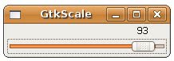

GtkScale可以是水平或垂直的拉桿元件，您可以拉動上面的拉桿，拉桿的位置代表某個值並可以加以顯示，您可以使用gtk_hscale_new_with_range()建立一個水平並具有上、下界及遞增值拉桿元件，gtk_vscale_new_with_range()則是垂直元件，GtkScale基本上會顯示浮點數，您可以使用gtk_scale_set_digits()設定顯示的位數，數字的顯示位置可以有上、下、左
、右，可使用gtk_scale_set_value_pos()來設定，可設定的值為GTK_POS_TOP、GTK_POS_BUTTOM、GTK_POS_LEFT與 GTK_POS_RIGHT。
下面的程式是個簡單的示範：
- gtk_scale_demo.c
#include <gtk/gtk.h>
int main(int argc, char *argv[]) {
GtkWidget *window;
GtkWidget *scale;
gtk_init(&argc, &argv);
window = gtk_window_new(GTK_WINDOW_TOPLEVEL);
gtk_window_set_title(GTK_WINDOW(window), "GtkScale");
gtk_window_set_default_size(GTK_WINDOW(window), 200, 30);
scale = gtk_hscale_new_with_range(0.0, 100.0, 1.0);
gtk_scale_set_digits(GTK_SCALE(scale), 0);
gtk_scale_set_value_pos(GTK_SCALE(scale), GTK_POS_TOP);
gtk_container_add(GTK_CONTAINER(window), scale);
g_signal_connect(GTK_OBJECT(window), "destroy",
G_CALLBACK(gtk_main_quit), NULL);
gtk_widget_show_all(window);
gtk_main();
return 0;
}一個執行的結果畫面如下所示：
